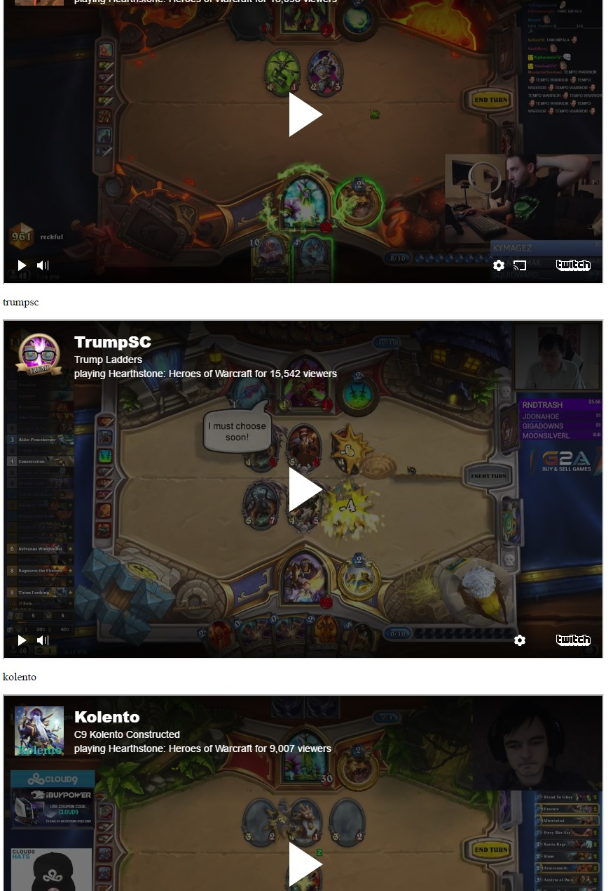

In this tutorial, we've covered obtaining a Client-ID, making HTTP requests, and working with the response.
Take a look at our initial application.
With the information from the previous sections, you should now be equipped to work with the Twitch API.
As a challenge, try dynamically embedding inline frames (iframes) of streams so users won't have to leave your website. This documentation should help with what tag element to create and the attributes to set.
The result should look like this:
